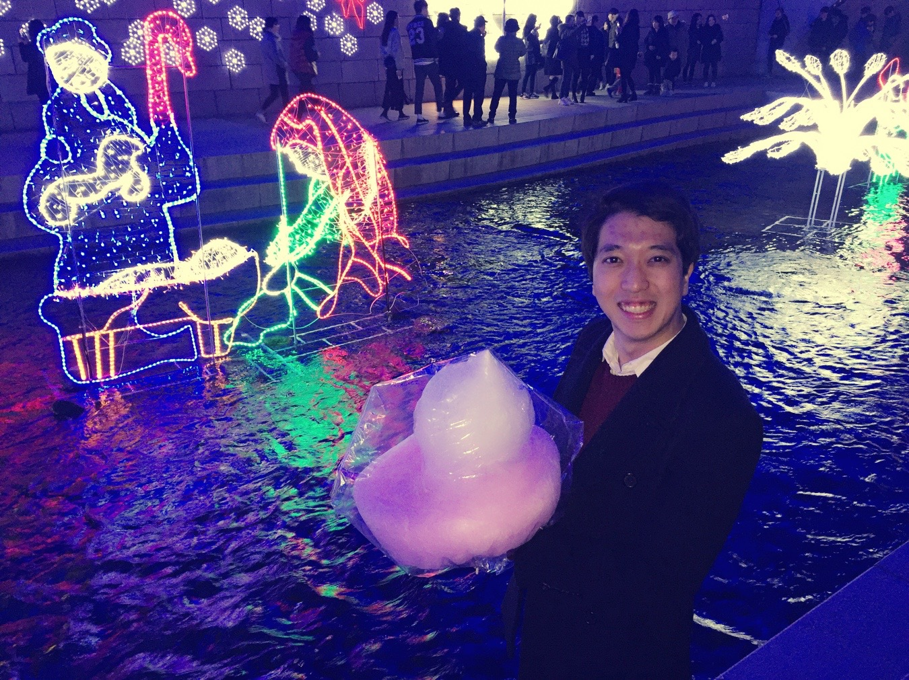
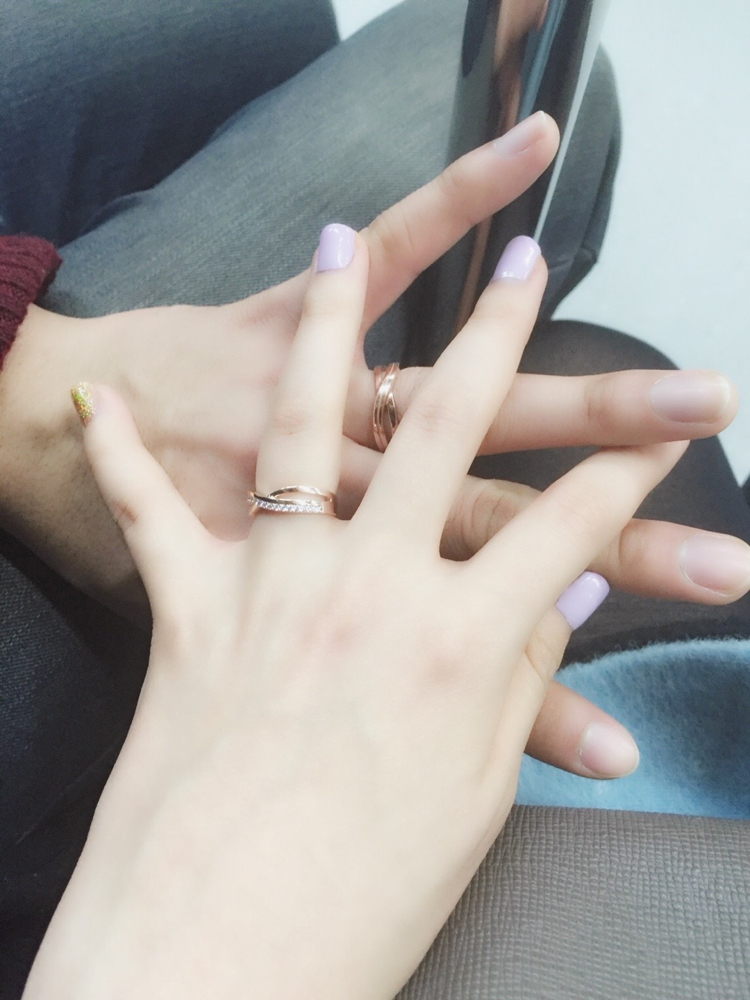

Ever since I was a young boy, my calendar has always had two stars: my birthday and Christmas Day. There's something about Christmas that stirs up a sense of festivity from deep within, which is why I start feeling giddy as soon as the month of December begins its countdown. This is a story about our first Christmas and New Years Eve.
After four months' worth of whirlwinds, Nicole and I were safely reunited in Korea. We'd thought that long-distance had finally come to a temporary halt, until we realized that even within the relatively small Korean peninsula, we lived two hours apart. The biting winter winds didn't help, either, but by that time we were already so fed up with distance being a barrier that anything within driving distance seemed to be a feasible option. And so began the four-hour daily commutes, fatigue notwithstanding, just because we could.

Our first date back in Korea began with a small pleasantry from my mom: Christmas soap! (This might explain my almost zealous passion towards Christmas; it's in the blood.) Much of the day was spent roaming the streets of Daejeon. Disclosure: it wasn't just this day, but most of winter break spent roaming the very city. And our efforts obviously paid off - we have proof. A lot of it.
Our warm cozy hideout

Another example of a casual selfie turning out picturesque

Now I'm just hungry
The picture below is one of my all-time favorites, one that wasn't planned out in any way but really representative of who we are: fun-loving, random, and rather cute, to be honest. It was taken while we were shopping for absolutely nothing - I guess it was who it was with that mattered, not where we were or what we did.
One of the more memorable nights was when Nicole came to Seoul for a night out in 청계천, a waterway adorned by lights come wintertime. I distinctly remember the shining decorations from when I was 12 years old, when our family had came to the exact same spot to take pictures with abysmal cameras on the now-antique folder phones. Fast-forward 10 years, and we were back for much better pictures, armed with state-of-the-art mobile cameras sponsored by Apple.
The lights weren't due to be staged until after dusk, so we spent much of the morning shopping for Christmas sweaters. We'd actually shopped around for quite some time, looking for that perfect sweater, but in the end we decided that the first one we'd seen - the one that prompted us to start shopping in the first place - was the best fit for us.
The sweater just screams of Christmas
Shopping had taken a little longer than we'd thought, so at first we thought it might be tough to make it to the lights, especially considering how Nicole had to be back on a bus to Daejeon. But we decided to power through - we didn't want to wait a whole year to revisit this opportunity - and in retrospect it was one of the better decisions we'd made that year.
The lights were beautiful. To be able to enjoy them with Nicole was something else. Whenever I saw beautiful images of sceneries and tourist attractions, I'd felt that I wanted to share the moment with the person I really wanted to be with. It was one of those moments when you realize just how lucky you are, to have the blessing to share the moment with just the person you want next to you. We ran into multiple street vendors that sold candied fruits and cotton candy, both of which Nicole was hooked into. As such, they made their way into a lot of our pictures that night.
Oh, and it was the day we got our rings back. It was something that I'd insisted on getting for months, mostly because it was something to remind me of her at all times, even when we were not physically next to each other. I've received tens of question on whether I'm married, strictly based on this ring alone. I guess it's one of those cultural differences, but I often answer with a "yes" just because I can.
Christmas Eve was spent with our family members respectively. Spending Christmas Day watching the giant tree in Rockefeller Center is one of my childhood dreams, and though it didn't materialize in 2015, and probably not in 2016, either, it's still a work in progress. In the mean tim,e we came up with our own version of celebrating Christmas: a beautiful hand-made cake! To be honest, it's a work of art, it really is. Now, I'm not gifted with artistic talents of any sort; she, on the other hand, is well-versed in the classic arts and music. It's not too hard to guess who was the main architect behind this beauty.
2015 was, by all accounts, an amazing year. I was discharged from the Army, worked at an amazing company, and successfully completed another semester. But the cherry on the top was that serendipitous dinner on July 7th, after which my life took a turn for the better, to say the very least. Ever since then, every memory has had a shade of Nicole in it, whether it be FaceTiming her after an especially grueling project, or sharing the hard-earned free time with her, enjoying the moment and savoring the memories.
As such, it was only natural that we spent the last few days of the year to wrap up the hectic blessing that had been 2015. It was she who first came up with the idea of hand-writing messages on polariod pictures and creating mobiles out of them to hang on the walls. As with everything we do, there were multiple challenges, the biggest of which was actually printing the pictures we had on polariods. After days of searching we came up with a relatively cheap shop that would do the job for us, and on December 30th, 2015, we set up camp in a beautiful book cafe to get started.
It was a very labor-intensive process: we had to punch holes, write messages, and tie them to decorative strings - and repeat each process, because we would each have a copy of the mobiles. As strenuous as the production was, it was a swell way to look back upon ourselves for the past year and really appreciate who we had become over the past 5 months. Scribbling cute messages definitely didn't hurt, either. The result was an absolutely picture-perfect set of mobiles that are right next to me, on my wall right next to my laptop, even as I create this website right now.
Dawwwww, look at us
The end of winter break coincided almost exactly with the beginning of 2016 due to the Dartmouth quarter set to begin on January 4th, 2016. The first day of 2016, the 1st, was also our last date in Korea. It was fitting that we spent most of it in 성심당, one of the most popular places in the city of Daejeon. It's the most delicious bakery that I've been to, period. And this cute chocolate bear probably agrees with me, too.
"It really is the best" - the bear, probably
And with that, Nicole left to resume year 3 in Dartmouth. I would be joining her in a week as well, but as with all farewells, this one hurt. A lot. I would be joining her in the states in a week, but a lot of it had to do with the fact that it would be a while for us to be together in the same place for such an extended period of time.
As with every graceful memory, the winter of 2015 had come to an end. Alas, another chapter of our stupidly beautiful youths had been written, full of tears, laughs, and everything in between.